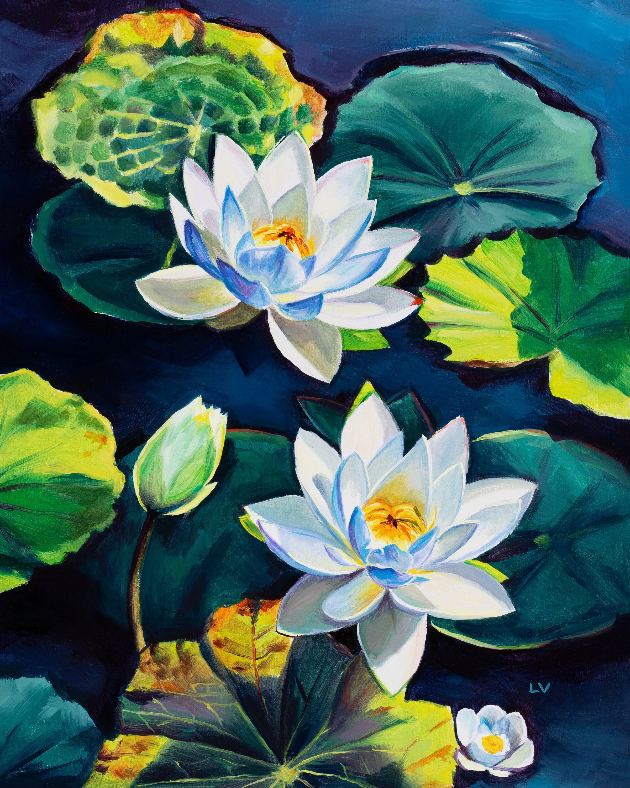

S'entraîner avec la barre de défilement
Objectif : Naviguer entre les poèmes en utilisant la barre de défilement vertical et son curseur de déplacement
💡 Conseil important
Déplacez-vous d'un poème à l'autre en utilisant la barre de défilement. Repérez les TITRES en orange qui vous donneront les consignes à suivre.
Rappel : utiliser la barre de défilement
C'est la barre grisée sur le côté droit de l'écran, avec un curseur de déplacement.
Cliquez sur le curseur, maintenez enfoncé et glissez vers le bas pour voir la suite de la page.
Cliquez sur le curseur, maintenez enfoncé et glissez vers le haut pour revenir en arrière.
Pensez à la fermeture éclair : suivez bien la glissière sans lâcher le curseur !
Aide visuelle


Le curseur fonctionne comme une fermeture éclair
1. Lisez ce poème, puis descendez au suivant
La pomme
On la déguste on l'avale
Elle est aussi dure qu'un narval
On l'aime elle est juteuse
Sans douter qu'elle est menteuse
Elle dit qu'elle est ronde et blonde
Avez-vous déjà vu une pomme ronde
Sans nul doute qu'elle est blonde
Elle tombe d'un arbre
Sans une égratignure, elle est de marbre
Mais son cœur se brise
Quand on ne lui fait pas la bise
C'est la pomme menteuse et juteuse
Qui n'ose dire la vérité
Sans douter qu'elle est gaieté.

2. Bien ! Descendez encore pour lire l'albatros

L'albatros
Souvent, pour s'amuser, les hommes d'équipage
Prennent des albatros, vastes oiseaux des mers,
Qui suivent, indolents compagnons de voyage,
Le navire glissant sur les gouffres amers.
A peine les ont-ils déposés sur les planches,
Que ces rois de l'azur, maladroits et honteux,
Laissent piteusement leurs grandes ailes blanches
Comme des avirons traîner à côté d'eux.
Ce voyageur ailé, comme il est gauche et veule !
Lui, naguère si beau, qu'il est comique et laid !
L'un agace son bec avec un brûle-gueule,
L'autre mime, en boitant, l'infirme qui volait !
Le poète est semblable au prince des nuées
Qui hante la tempête et se rit de l'archer ;
Exilé sur le sol au milieu des huées,
Ses ailes de géants l'empêchent de marcher.
3. Continuez vers le poème sur l'automne
L'automne
L'automne au coin du bois,
Joue de l'harmonica.
Quelle joie chez les feuilles !
Elles valsent au bras
Du vent qui les emportent.
On dit qu'elles sont mortes,
Mais personne n'y croit.
L'automne au coin du bois,
Joue de l'harmonica.

4. Descendez encore pour lire le dernier poème

L'école des Beaux-Arts
Dans une boîte de paille tressée
Le père choisit une petite boule de papier
Et il la jette
Dans la cuvette
Devant ses enfants intrigués
Surgit alors
Multicolore
La grande fleur japonaise
Le nénuphar instantané
Et les enfants se taisent
Émerveillés
Jamais plus tard dans leur souvenir
Cette fleur ne pourra se faner
Cette fleur subite
Faite pour eux
A la minute
Devant eux